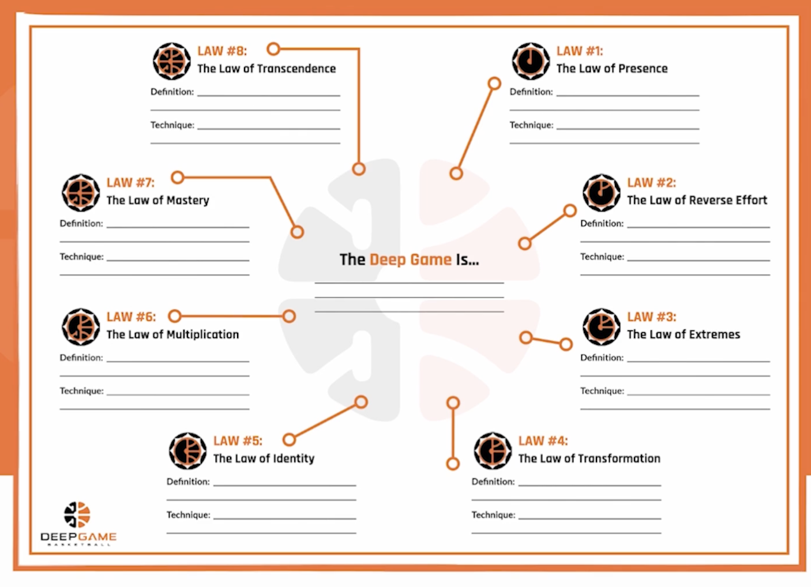

How to Tackle the Mental Journey of Basketball
Desmond Ulokameje
Desmond Ulokameje's "How to Tackle the Mental Journey of Basketball" uses basic elemtents of HTML to relay information provided from a MasterClass called "The DeepGame" in perspective of Desmond Ulokameje's interpretation of the said "DeepGame".
Desmond Ulokameje, a passionate basketball enthusiast, embarked on a transformative journey through the teachings of "The DeepGame," a MasterClass dedicated to unraveling the intricacies of the sport's mental domain.
Delving into the depths of this profound program, Desmond discovered a wealth of wisdom encapsulated in the 8 fundamental laws of The Deep Game.
These laws, akin to guiding stars in the vast basketball universe, illuminate the path toward unlocking one's full potential both on and off the court. The essence of The Deep Game lies not just in physical prowess but in the cultivation of a championship mindset—a mindset that transcends mere skills and drills to embrace the holistic journey of self-improvement and excellence.
The first law, "The Law of Presence," serves as the cornerstone of Desmond's journey. It instills the understanding that performance flourishes when the mind is uncluttered, and focus is sharpened like a finely honed blade. Through mindfulness practices and mental conditioning, Desmond learned to be fully present in each moment of the game, harnessing the power of now to elevate his performance.
Building upon this foundation, Desmond delved into "The Law of Reverse Effort," discovering the paradoxical truth that trying too hard often hinders rather than enhances performance. By finding the delicate balance between effort and ease, Desmond unlocked a natural flow state where actions flowed effortlessly, leading to enhanced decision-making and execution on the court.
As Desmond progressed through the laws of The Deep Game, each principle resonated deeply, offering insights into conquering the mental hurdles that often plague basketball players. "The Law of Extremes" reminded Desmond of the importance of emotional regulation, ensuring that heightened emotions did not compromise his consistency and focus during critical game moments.
"The Law of Transformation" became a guiding light, encouraging Desmond to prioritize growth over mere accomplishment. This shift in perspective fueled his relentless pursuit of improvement, pushing him to embrace challenges, seek feedback, and continuously refine his skills to reach new heights of mastery.
Embracing "The Law of Identity," Desmond realized the power of self-belief in shaping his performance. By crafting a positive self-image and aligning his identity with his aspirations as an elite player, Desmond cultivated a confidence that radiated through every aspect of his game.

"The Law of Magnetism" taught Desmond the art of attracting success by letting go of the need to control outcomes and instead focusing on playing with joy, passion, and a team-centric approach. This newfound magnetism drew opportunities and elevated Desmond's impact both individually and within his team.
With "The Law of Mastery," Desmond embraced the journey of continuous improvement and personal excellence. This shift in perspective fueled his relentless pursuit of improvement, pushing him to embrace challenges, seek feedback, and continuously refine his skills to reach new heights of mastery.
"The Law of Transcendence" empowered Desmond to rise above ego and fear, unleashing his limitless potential and playing with freedom, creativity, and fearlessness.
Through his journey with The Deep Game, Desmond not only honed his basketball skills but also transformed his mindset, enhancing team dynamics, and ultimately unlocking his full potential on the court. The 8 laws of The Deep Game became more than guiding principles—they became the pillars of Desmond's success story, propelling him toward greatness in the game of basketball and beyond.